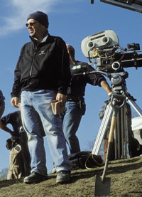

|
2003 was a big year for Civil War movies. Gods and
Generals, based on Jeff Shaara's novel of the same name hit
theaters in the spring. Gods and Generals was a paean to the
Old Confederacy, reflecting the "Lost Cause" interpretation
of the war. This school of Civil War historiography received
its name from an 1867 book by Edward A. Pollard, who wrote
that defeat on the battlefield left the south with nothing
but "the war of ideas."
I know from the Lost Cause school of the Civil War. I
grew up in a Lost Cause household. I took it for gospel
truth that the Civil War was a noble enterprise undertaken
in defense of southern rights, not slavery, that accordingly
the Confederates were the legitimate heirs of the American
Revolutionaries and the spirit of '76, and that resistance
to the Lincoln government was no different than the
Revolutionary generation's resistance to the depredations of
George III. The Lost Cause school was neatly summarized in
an 1893 speech by a former Confederate officer, Col. Richard
Henry Lee:
As a Confederate soldier and as a Virginian, I deny the
charge [that the Confederates were rebels] and denounce it
as a calumny. We were not rebels, we did not fight to
perpetuate human slavery, but for our rights and privileges
under a government established over us by our fathers and in
defense of our homes.
Cold Mountain, based on Charles Frazier's historical
novel, was released on Christmas Day. It too is about the
Civil War but Cold Mountain is a far cry from Gods and
Generals. This is the "other war," one in which war has lost
its nobility and those on the Confederate home front are in
as much danger from other southerners as they are from
Yankee marauders. Indeed, Cold Mountain can be viewed as the
anti-Gods and Generals.
Although it is based on a novel, Gods and Generals
focuses on well-known historical figures. The central
character of Gods and Generals is the remarkable Confederate
general, Thomas Jonathan "Stonewall" Jackson. The historical
|

Director Anthony Minghella
on the set of Cold Mountain.
|
accuracy of the movie's portrayal of Jackson was ensured by
the role of Jackson's biographer, James I. Robertson, as a
historical consultant. The central characters of Cold
Mountain on the other hand, are the private soldier Inman,
the sort of southern everyman who fought and died in the
war, and the womenfolk who suffered on the home front. Inman
is a 19th-century Odysseus who undertakes an epic trek from
the hell of the Petersburg Crater to the Blue Ridge
Mountains of North Carolina in order to be reunited with his
Penelope.
The battles portrayed in Gods and Generals are clashes of
arms that look back to Napoleon and the quest for the
decisive battle of annihilation. Indeed, Robert E. Lee was
the most Napoleonic of Civil War generals and Jackson was
his Marshall Davout. Together they fashioned an operational
approach based on the strategic turning movement and
open-field maneuvering by infantry and cavalry to neutralize
the Union's advantage in engineering, artillery, and naval
power. This is what Lee attempted at Antietam and Gettysburg
and what he achieved at Second Manassas and
Chancellorsville. For Lee, maneuver was not an end in itself
but only the means to attack the enemy and inflict heavy
losses. Only in this manner, Lee believed, could the South
convince the population of the North that a costly and
interminable struggle lay ahead if the Confederacy were not
granted its independence.
Cold Mountain, on the contrary, begins with the siege of
Petersburg. By the end of July 1864, only a little over a
year after Lee had divided his force on two occasions to
defeat a Union army twice as large as his own at
Chancellorsville and had came close to achieving victory at
Gettysburg, the conflict had degenerated into a remorseless
war of attrition adumbrating the Western Front of the Great
War that would consume the world 50 years later.
The advantage now lay with the defense, which could be
penetrated only by stratagems such as the detonation of the
mine that led to the battle of the Crater, depicted at the
beginning of Cold Mountain. The commanding officer of the
48th Pennsylvania Infantry, a unit composed of coal miners,
convinced his superiors that a mine could be dug beneath the
Confederate lines, filled with explosives, and then
detonated. For the assault, the IX Corps commander, the
unfortunate Ambrose Burnside, who had been responsible for
the December 1862 Union debacle at Fredericksburg, chose as
the assault unit his 4th Division, an all-black unit. The
plan called for the attacking troops to go around the crater
created by the blast, and to unhinge the Confederate
defense.
In an early example of political correctness, only hours
before the assault was to be launched, George Meade, the
commanding general of the Army of the Potomac, with the
concurrence of general-in-chief Grant, ordered Burnside to
substitute another unit for the 4th Division, out of fear
that if the attack failed, the Union commanders would be
accused of using black soldiers as cannon fodder. When the
attack commenced, the substitute unit plunged directly into
the crater instead of around it, where the Union soldiers
were trapped and slaughtered by the Confederate defenders,
enraged by what they considered to be a dishonorable method
of warfare. There is no more powerful scene in Cold Mountain
than the one that shows the teeming mass of doomed humanity
trapped in the very hell of the Crater.
But the main reason to see Cold Mountain as the
anti-Gods and Generals is that it describes a South
at odds with the Lost Cause myth--a South divided against
itself. In the Lost Cause telling, all southerners were
loyal to the Confederacy. But that was not true even at the
outset of the war, much less by the winter of 1864-65. In
July 1861, the Richmond Examiner opined that the South was
"more rife with treason to her own independence and honor
than any community that ever engaged before in a struggle
with an adversary."
Unionists were dominant in many parts of the South,
especially in the mountain and upcountry areas of western
Virginia, east Tennessee, north Georgia, and western North
Carolina (home to Cold Mountain's Inman). Some Unionists
opposed secession but went with their states when they left
the Union. Many were cowed by fervent secessionists or were
caught up in the rage militaire that swept the South after
Fort Sumter, emerging in opposition only later as the war
went against the Confederacy. Some tried to sit it out, but
others took more active steps to resist the Confederate
government. Indeed, the dirty little secret of the
Confederacy--swept under the rug by the Lost Cause school--is
that some 100,000 white southerners (along with 150,000
blacks)--at least one battalion of white troops from every
Confederate state except South Carolina--served in Union
armies during the course of the war.
Desertion was a constant problem for both sides but it
was proportionately worse for the South. There was a great
deal of resistance to the Conscription Act passed by the
Confederate Congress in April 1862. Many southerners saw
this act as an example of the very governmental abuse of
power with which secessionists charged the Lincoln
administration-extralegal actions and oppressive measures on
the part of an illegitimate government. Exemptions favoring
wealthy slave-holders, e.g. the "twenty-[slave] rule,"
undermined morale further by reinforcing the belief that the
conflict was a rich man's war but a poor man's fight. Things
only got worse as the Confederacy suffered reverses on the
battlefield.
Many deserters simply went home in response to the
entreaties of their wives describing the hardships they
faced on the home front. Economic instability meant that
many families could not get by in the absence of fathers,
sons, husbands, and brothers. But others organized
themselves into guerrilla bands to prey on Confederates and
Yankees, soldiers and civilians alike.
While Confederate armies tried to hold the line against
the legions of the Union, home guards, local militias, and
Confederate officials tried to cope with Unionist
guerrillas, deserters, and the possibility of servile
insurrection. In many cases, law enforcement on the home
front was left to local bullies who used power for their own
ends and to settle old scores in the absence of the men who
were off fighting with Lee in Virginia or Bragg in
Tennessee. This describes Teague in Cold Mountain.
Advocates of the Lost Cause school are alive and well. I
heard from many of them in response to my review of Gods and
Generals. No doubt they will hate Cold Mountain as much as
they loved Gods and Generals. But they cannot deny that
Inman and Ada Monroe and Ruby and Teague are as much a part
of the story of the Confederacy as Robert E. Lee and
Stonewall Jackson.
Source: Mackubin Thomas Owens in The National Review Online (January 7, 2004).
|